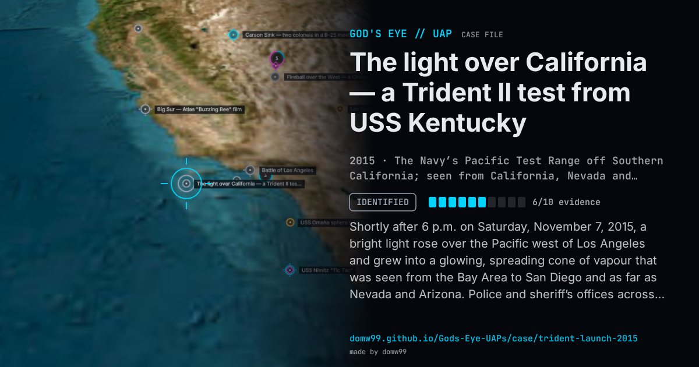

The light over California — a Trident II test from USS Kentucky

Shortly after 6 p.m. on Saturday, November 7, 2015, a bright light rose over the Pacific west of Los Angeles and grew into a glowing, spreading cone of vapour that was seen from the Bay Area to San Diego and as far as Nevada and Arizona. Police and sheriff’s offices across Southern California were flooded with calls, and the videos spread across social media as a UFO, a meteor or a missile gone wrong. The Navy said that evening that its Strategic Systems Programs had carried out a scheduled test flight of an unarmed Trident II D5 missile from USS Kentucky in the Pacific Test Range; such launches are not announced in advance. The effect, sunlight catching the exhaust plume high above a darkened ground, is the same as the Iridium launch of 2017 and many Vandenberg twilight launches before it.
Explanation
An unarmed Trident II (D5) ballistic missile fired by the submarine USS Kentucky during a scheduled test in the Pacific Test Range. The Navy confirmed it the same evening; its exhaust plume, lit by sunlight high above the darkened ground, produced the expanding “twilight phenomenon”.
What was seen
Shape: A bright light trailing a glowing, expanding cone of blue-white vapour
Witnesses: Thousands of people from San Francisco to San Diego, Las Vegas and Phoenix
Duration: Several minutes
Sources
- NPR — California: That strange light streaking across the sky was no UFO
- NBC News — Missile test off California coast causes streaking-light confusion
Browse
- United States
- 2010s
- Identified
- Tracked object events
- Official government documents
- Many independent witnesses
- Photographs
- Video footage
- Lights and fireballs